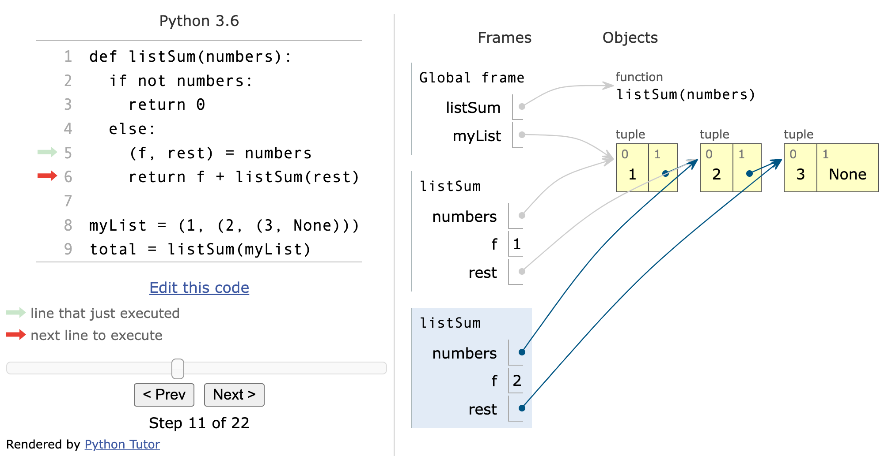
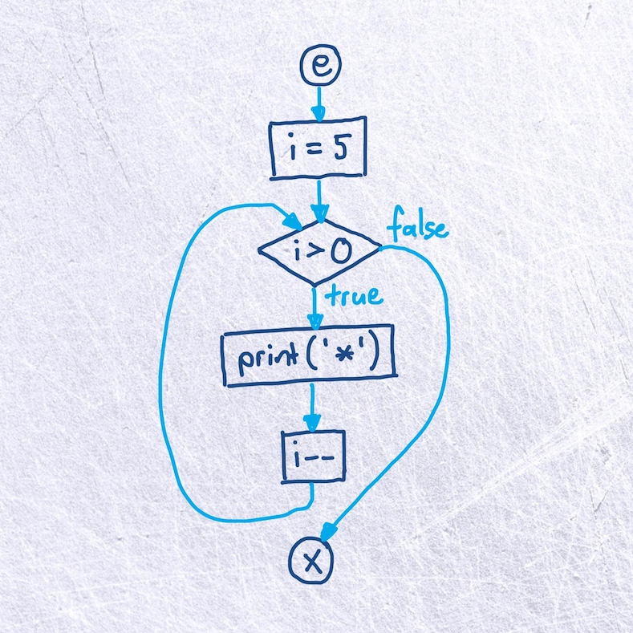
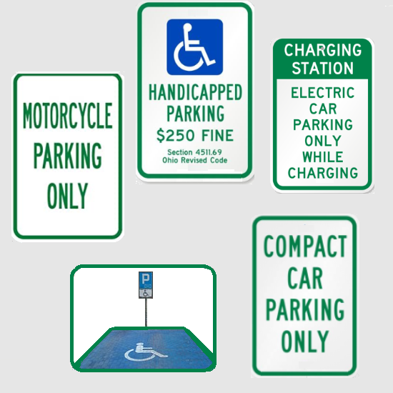

Towards sound notional machines:
a Lambda Calculus crash course


Università della Svizzera italiana
LuCE Research Group
LuCE Research Group

Utrecht University
Programming is hard!
Programming is hard!
- R. Lister et al., “A Multi-national Study of Reading and Tracing Skills in Novice Programmers,” ITiCSE 2004
- T. Beaubouef and J. Mason, “Why the high attrition rate for computer science students: some thoughts and observations,” SIGCSE 2005
- O. Seppälä el al., “Do We Know How Difficult the Rainfall Problem is?,” Koli Calling 2015
Programming is hard!
What can we do about it?
Notional Machines to the
rescue!
Notional Machines

Stack and Heap diagram

Control Flow graph
Variable as a box

Variable as a parking space
Notional Machines
"A Notional Machine is a pedagogic device to assist the understanding of some aspect of
programs or programming"
S. Fincher et al., “Notional Machines in Computing Education: The Education of Attention,” in Proceedings of the Working Group Reports on Innovation and Technology in Computer Science Education, Jun. 2020
Is Notional Machine X correct?
[an aspect of the semantics of]
Programming Language L
but what is this exactly?
but what is this exactly?
~?~
Notional Machine X
and what is that?
We need a formalization!
Lambda Calculus
Languages with Lambdas in TIOBE
| Oct 2021 | Programming Language | Ratings |
|---|---|---|
| 1 | Python | 11.27% |
| 2 | C | 11.16% |
| 3 | Java | 10.46% |
| 4 | C++ | 7.50% |
| 5 | C# | 5.26% |
| 6 | Visual Basic | 5.24% |
| 7 | JavaScript | 2.19% |
| 8 | SQL | 2.17% |
| 9 | PHP | 2.10% |
| 10 | Assembly language | 2.06% |
Lambda Calculus: History

Lambda Calculus
Alonzo Church 1935
Alonzo Church 1935
Turing Machine
Alan Turing 1936
Alan Turing 1936
Lambda Calculus: History
Lambda Calculus
Alonzo Church 1935
Alonzo Church 1935

Turing Machine
Alan Turing 1936
Alan Turing 1936
Lambda Calculus
Syntax
+
Semantics
Lambda Calculus
Syntax
\[\begin{aligned}
\mathrm{t} ::=\ & & \mathsf{terms} \\
& \mathrm{x} & \mathsf{variable} \\
& \mathrm{\lambda x.t} & \mathsf{abstraction} \\
& \mathrm{t\; t} & \mathsf{application}
\end{aligned} \]
Semantics
\[\begin{aligned}
\mathrm{(\lambda x. t_1)\; t_2 \longrightarrow [x \mapsto t_2] t_1}
\end{aligned} \]
Lambda Calculus
Syntax
Application is left-associative
\[\begin{aligned}
\mathrm{a} & \mathrm{\; b\; c\; d} \\
\mathrm{((a} & \mathrm{\; b)\; c)\; d}
\end{aligned} \]
Body of Lambda extends as far as possible
\[\begin{aligned}
\mathrm{\lambda x. a\;} & \mathrm{b} \\
\mathrm{(\lambda x. a\;} & \mathrm{b)}
\end{aligned} \]
Lambda Calculus
Multiple arguments?
function first(a, b) { return a; }
function first(a) { return function(b) { return a; }; }
\[\begin{aligned}
\mathrm{\lambda t. \lambda f. t}
\end{aligned} \]
Lambda Calculus
Multiple arguments?
Example:
\[\begin{aligned}
& \mathrm{(\lambda t. \lambda f. t)\; a\; b} \\
\fragment{1}{=}\ & \fragment{1}{\mathrm{(\lambda t. \;\lambda f. t)\;\; a\;\; b}} \\
\fragment{2}{=}\ &\!\! \fragment{2}{\mathrm{(\underline{(\lambda \color{red}t. (\lambda f. \color{red}t))\; \color{cyan}a})\; b}} \\
\fragment{3}{\longrightarrow}\ & \fragment{3}{\mathrm{(\lambda f. \color{cyan}a)\; b}} \\
\fragment{4}{\longrightarrow}\ & \fragment{4}{\mathrm{a}}
\end{aligned} \]
Lambda Calculus
Where's the data? e.g. Booleans
Goal
\[\begin{aligned}
\mathrm{ifElse\; b\; x\; y}
\end{aligned} \]
Lambda Calculus
Where's the data? e.g. Booleans
Solution
\[\begin{aligned}
\mathrm{tru}\ & \mathrm{= \lambda t. \lambda f. t} \\
\mathrm{fls}\ & \mathrm{= \lambda t. \lambda f. f} \\
\mathrm{ifElse}\ & \mathrm{= \lambda b. \lambda m. \lambda n. b\; m\; n}
\end{aligned} \]
Example
\[\begin{aligned}
\ & \mathrm{ifElse\; tru\; x\; y} \\
=\ & \mathrm{(\lambda b. \lambda m. \lambda n. b\; m\; n)\; tru\; x\; y} \\
\longrightarrow\ & \mathrm{(\lambda m. \lambda n. tru\; m\; n)\; x\; y} \\
\longrightarrow\ & \mathrm{(\lambda n. tru\; x\; n)\; y} \\
\longrightarrow\ & \mathrm{tru\; x\; y} \\
=\ & \mathrm{(\lambda t. \lambda f. t)\; x\; y} \\
\longrightarrow\ & \mathrm{(\lambda f. x)\; y} \\
\longrightarrow\ & \mathrm{x}
\end{aligned} \]
Lambda Calculus
Where's the data?
- Numbers? Use peano arithmetic!
- Compound data? Pairs? Use booleans.
Lambda Calculus
Recursion!
\[\begin{aligned}
\mathrm{omega} =\; & \mathrm{(\lambda x. x\; x)\; (\lambda x. x\; x)}
\end{aligned} \]
\[\begin{aligned}
\ & \mathrm{(\lambda x. x\; x)\; (\lambda x. x\; x)} \\
\ & \fragment{2}{\mathrm{(\lambda \color{red}x. \color{red}x\; \color{red}x)\; \color{cyan}{(\lambda x. x\; x)}}} \\
\fragment{3}{\longrightarrow}\ & \fragment{3}{\mathrm{\color{cyan}{(\lambda x. x\; x)\; (\lambda x. x\; x)}}} \\
\fragment{4}{\longrightarrow}\ & \fragment{4}{\mathrm{(\lambda x. x\; x)\; (\lambda x. x\; x)}} \\
\fragment{5}{\longrightarrow}\ & \fragment{5}{\mathrm{(\lambda x. x\; x)\; (\lambda x. x\; x)}} \\
\ & \fragment{6}{\dots}
\end{aligned} \]
Lambda Calculus
Recursion!
\[\begin{aligned}
\mathrm{fix} & = \mathrm{\lambda f. (\lambda x. f\; (\lambda y. x\; x\; y))\; (\lambda x. f\; (\lambda y. x\; x\; y))}
\end{aligned} \]
\[\begin{aligned}
\mathrm{g} & = \mathrm{\lambda fct. \lambda n. \mathsf{if}\; realeq\; n\; c_0\; \mathsf{then}\; c_1\; \mathsf{else}\; (times\; n\; (fct\; (prd\; n)))} \\
\mathrm{factorial} & = \mathrm{fix\; g}
\end{aligned} \]
References
- Books
- B. C. Pierce, "Types and programming languages." Cambridge, Mass: MIT Press, 2002.
- B. C. Pierce et al., Programming language foundations, vol. 2. Electronic textbook, 2021.
- P. Wadler, W. Kokke, and J. G. Siek, Programming language foundations in Agda. 2020. [Online]. Available: http://plfa.inf.ed.ac.uk/20.07/
- Papers
- Computer Science Education
- R. Lister et al., “A Multi-national Study of Reading and Tracing Skills in Novice Programmers,” in Working Group Reports from ITiCSE on Innovation and Technology in Computer Science Education, New York, NY, USA, 2004, pp. 119–150. doi: 10.1145/1044550.1041673.
- T. Beaubouef and J. Mason, “Why the high attrition rate for computer science students: some thoughts and observations,” SIGCSE Bull., vol. 37, no. 2, pp. 103–106, Jun. 2005, doi: 10.1145/1083431.1083474.
- O. Seppälä, P. Ihantola, E. Isohanni, J. Sorva, and A. Vihavainen, “Do We Know How Difficult the Rainfall Problem is?,” in Proceedings of the 15th Koli Calling Conference on Computing Education Research, New York, NY, USA, 2015, pp. 87–96. doi: 10.1145/2828959.2828963.
- S. Fincher et al., “Notional Machines in Computing Education: The Education of Attention,” in Proceedings of the Working Group Reports on Innovation and Technology in Computer Science Education, New York, NY, USA, Jun. 2020, pp. 21–50. doi: 10.1145/3437800.3439202.
- Lambda Calculus
- A. Church, “An Unsolvable Problem of Elementary Number Theory,” American Journal of Mathematics, vol. 58, no. 2, pp. 345–363, 1936, doi: 10.2307/2371045.
- A. M. Turing, “On computable numbers, with an application to the Entscheidungsproblem,” Proceedings of the London mathematical society, vol. 2, no. 1, pp. 230–265, 1937.
- P. Wadler, “Propositions as types,” Commun. ACM, vol. 58, no. 12, pp. 75–84, Nov. 2015, doi: 10.1145/2699407.
- Computer Science Education